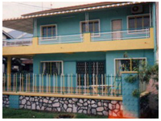
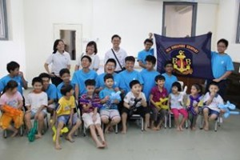
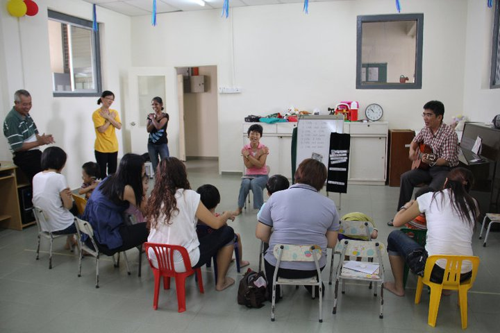
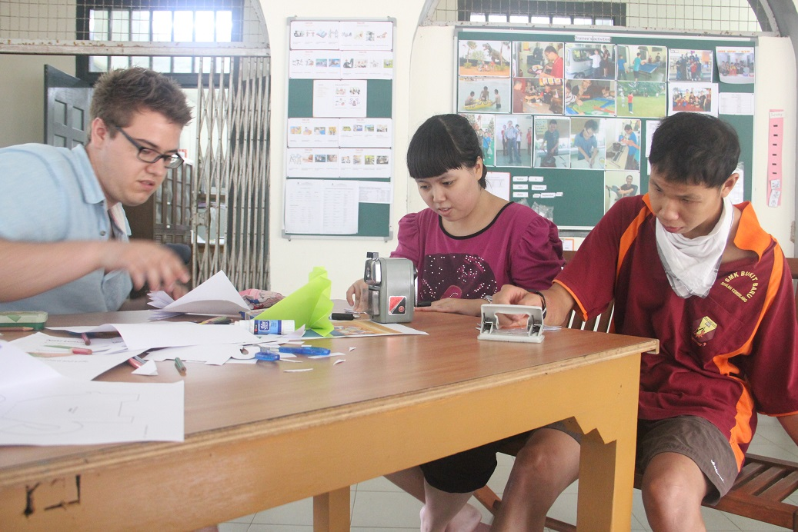
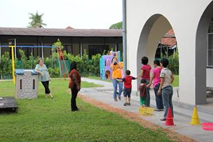
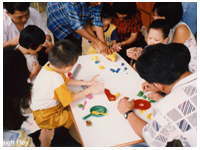
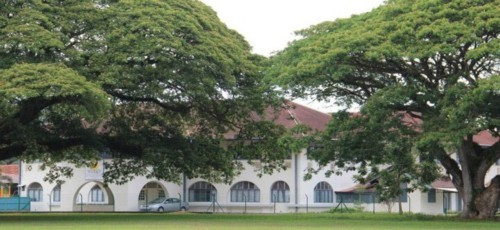

Our Story
How Wings Melaka began, who first led it, and the identity that shapes everything we do.
How it all started
Wings Melaka had its beginnings in 1997, when a group of Christian parents whose children had special needs met together, hoping to start services for children and adults with learning differences. With the support of Malaysian Care and the community of churches in Melaka, this became a reality in October 1998, when Wings Melaka launched the Early Intervention Programme. On 28 June 1999, Wings Melaka became officially registered.
While the initial focus was on younger children, over the years Wings expanded to include school-age children and young adults with learning differences. Wings Melaka is a not-for-profit organisation, open to people of all races and religions.

Our early premisesFirst office bearers
The dedicated volunteers who first led and shaped Wings Melaka.
Our Identity
Wings Melaka is a not-for-profit organisation providing a range of programs designed to help people, especially children, with learning differences and their families. While the initial focus of Wings Melaka programs were on younger children, over the years, Wings Melaka expanded its programs to also include school-age children and young adults with learning differences.
These programs maximize the learning opportunities for people with learning differences through creative, empowering and transforming activities, thereby helping them achieve their maximum potential. Wings Melaka is open to people of all races and religions.





